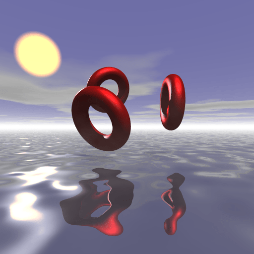

Expanding a polynomial with 'caracas'
I wanted to plot an algebraic isosurface with POV-Ray but the expression of the polynomial defining the isosurface was very long (the polynomial had degree 12). Moreover there was a square root in the coefficients (\(\sqrt{3}\)) as well as \(\cos t\) and \(\sin t\), where \(t\) is a parameter I wanted to vary in order to make an animation. So I needed a tool able to expand a polynomial with some literal values in the coefficients. This is not possible with the Ryacas package.
I finally found this tool: the caracas package. It allows to use the Python library SymPy in R. I didn’t carefully read its documentation yet, I don’t know whether it has other features. But this feature is a great one.
Here is a small example:
library(caracas)
def_sym(x, y, z, a, b) # symbolic values
poly <- sympy_func(
x^2 + a*x^2 + 2/3*y + b*y + x*z + a*x*z, "Poly", domain = "QQ[a,b]"
)
as.character(poly)This gives:
"Poly((a + 1)*x^2 + (a + 1)*x*z + (b + 2/3)*y, x, y, z, domain='QQ[a,b]')"That is great. Here QQ[a,b] is the field \(\mathbb{Q}[a,b]\). I lost a
significant part of my knowledge in mathematics but I think this is a
field. It doesn’t matter. Roughly speaking, this is the set of rational
numbers to which we add the two elements \(a\) and \(b\). So there are
treated as constants, as if they were some numbers.
To get a coefficient, for example the one of \(xz = x^1y^0z^1\):
sympy <- get_sympy()
sympy$Poly$nth(poly$pyobj, 1L, 0L, 1L)This gives:
a + 1Everything needed for writing the POV-Ray code was there. I wrote a small script in addition to generate this code. I show it below with the above small example:
library(caracas)
library(partitions) # to get the compositions of an integer,
# representing the degrees with a given total
def_sym(x, y, z, a, b)
poly <- sympy_func(
x^2 + a*x^2 + 2/3*y + b*y + x*z + a*x*z, "Poly", domain = "QQ[a,b]"
)
sympy <- get_sympy()
f <- function(comp){
xyz <- sprintf("xyz(%s): ", toString(comp))
coef <- sympy$Poly$nth(poly$pyobj, comp[1L], comp[2L], comp[3L])
if(coef == 0) return(NULL)
paste0(xyz, coef, ",")
}
for(deg in 0L:2L){
comps <- compositions(deg, 3L)
povray <- apply(comps, 2L, f, simplify = FALSE)
cat(
unlist(povray), sep = "\n", file = "povray.txt", append = deg > 0L
)
}And here is the povray.txt file generated by this script:
xyz(0, 1, 0): b + 2/3,
xyz(2, 0, 0): a + 1,
xyz(1, 0, 1): a + 1,One just has to remove the trailing comma, and this the desired POV-Ray code.
I won’t leave you without showing the animation:

Credit to ‘ICN5D’ for the isosurface.